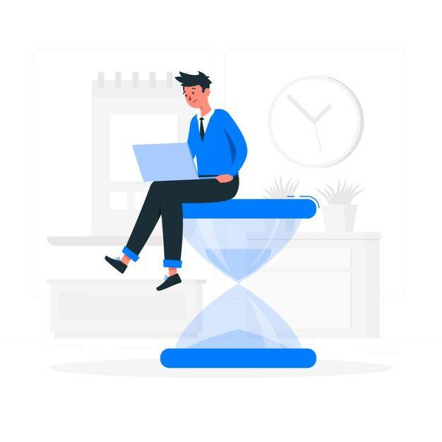

Як проходить навчання
1. Дивіться відеолекції
Якісне відео з зрозумілим поясненням теорії.

2. Робіть завдання і відправляйте на перевірку
Поспішати не треба, обирайте зручний режим навчання.
3. Отримуйте розбір вашої роботи
Ваш куратор розповість про помилки і про те, як їх виправити.
4. Працюйте над помилками
Проходьте перевірку ще раз, щоб переконатися, що в цей раз все правильно.
Рівні навчання
Перший рівень: чітка і зрозуміла теорія
За 4 місяці вам необхідно буде пройти 16 тем. Ви самостійно вивчіть базові навички, з якими зможете створювати справжні проекти. Ви створите дипломний проект движок блогу в веб-інтерфейсі. Захист проекту проходить у відкритому режимі на нашому майданчику або по відеозв'язку.
Другий рівень: інтенсивна практика
Під керівництвом наставника ви в складі команди створите власну соціальну мережу. Фактично ця частина програми прирівнюється до стажування. Вам видадуть ТЗ і дизайн проекту. Всі процеси, через які ви пройдете, це максимально наближений до бойових умов досвід. Саме так створюється комерційне програмне забезпечення в фірмах-роботодавців.